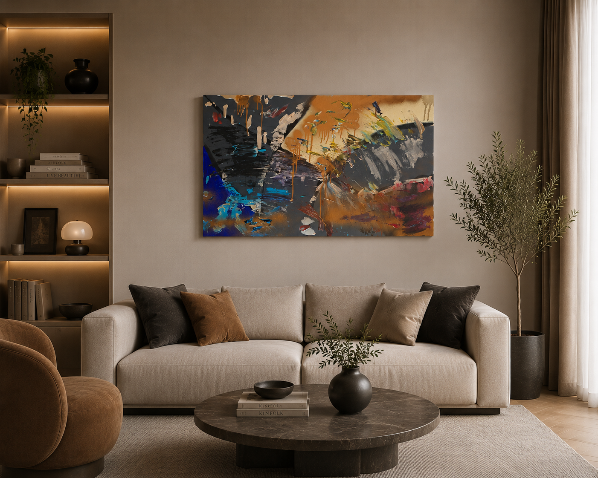
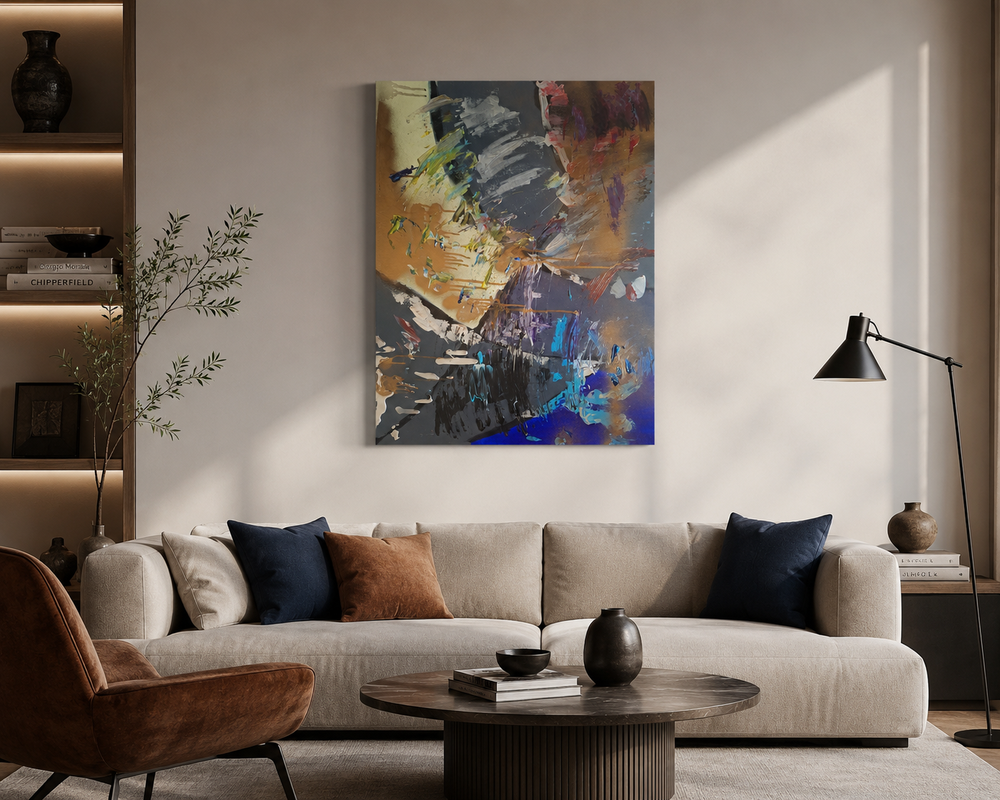

Abstracta Gallery · Collezione

Equilibrio nel Caos
Quest'opera rappresenta il dialogo continuo tra ordine e disordine, tra emozione e razionalità. Le pennellate decise, le colature e le sovrapposizioni di colore raccontano il percorso di ogni esperienza che lascia un segno e contribuisce a costruire la nostra identità.
I toni scuri evocano introspezione e profondità, mentre le sfumature calde e gli accenti di blu simboleggiano energia, speranza e trasformazione. Non esiste un soggetto preciso: ogni osservatore è libero di trovare un significato personale, lasciandosi guidare dalle forme e dai contrasti.
L'opera vuole ricordare che anche nel caos esiste un equilibrio, e che spesso è proprio dall'imprevedibilità che nasce la bellezza.
Dettagli dell’opera
L’opera nello spazio

